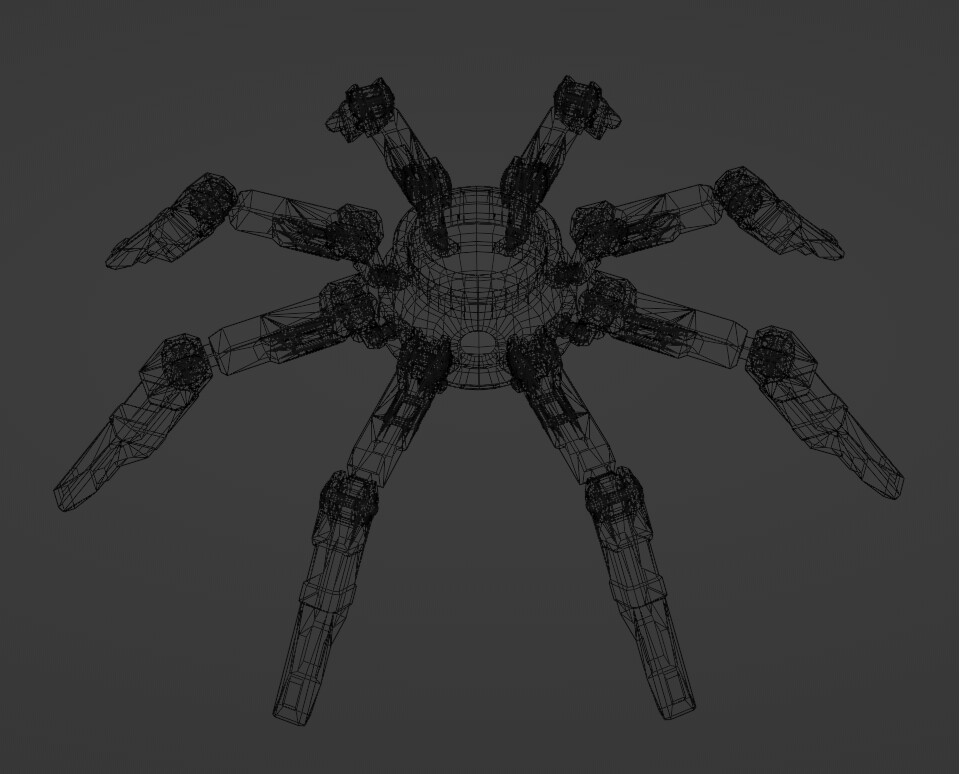

this project was a study in hard-surface modelling, rigging, and animation. after some very basic sketches i moved into Blender to model this eight-legged friend. 4 joints per leg, and a movable eye/camera unit in the center of its body, it's fully rigged with inverse kinematics.
its materials are procedural using Blender's shader nodes, combined with weight painting to be rustier in certain places (around joints).
i animated a looping walk cycle (or more like a scuttling cycle) for the spider, though i never got around to animating any other actions
i originally made this for an Unreal project (which didn't get very far) where you would control two different spiders and switch between their body-camera-eyes to navigate them around a room and solve spatial puzzles.
the model totals 20k tris, which is a fair few, but i made an effort to keep it minimal (especially with all the small joints and details)

wireframe view